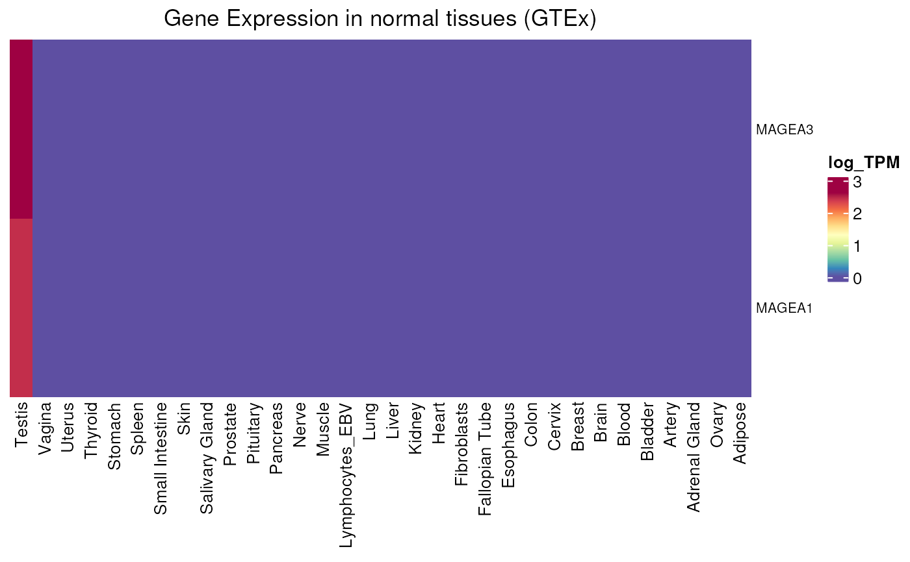

Plots an expression heatmap of genes in normal tissues (GTEx database).
Usage
GTEX_expression(
genes = NULL,
units = c("TPM", "log_TPM"),
include_CTP = FALSE,
values_only = FALSE
)Arguments
- genes
characternaming the selected genes. The default value,NULL, takes all CT (specific) genes.- units
character(1)with expression values unit. Can be"TPM"(default) or"log_TPM"(log(TPM + 1)).- include_CTP
logical(1)IfTRUE, CTP genes are included. (FALSEby default).- values_only
logical(1). IfTRUE, the function will return the expression values in all samples instead of the heatmap. Default isFALSE.
Value
A heatmap of selected genes expression in normal tissues.
If values_only = TRUE, expression values are returned instead.
Examples
GTEX_expression(units = "log_TPM")
#> see ?CTdata and browseVignettes('CTdata') for documentation
#> loading from cache
GTEX_expression(genes = c("MAGEA1", "MAGEA3"), units = "log_TPM")
#> see ?CTdata and browseVignettes('CTdata') for documentation
#> loading from cache
